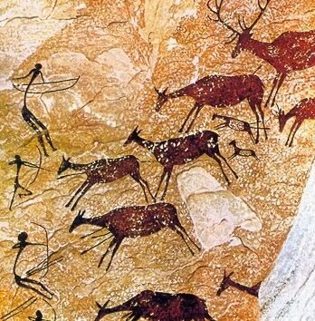
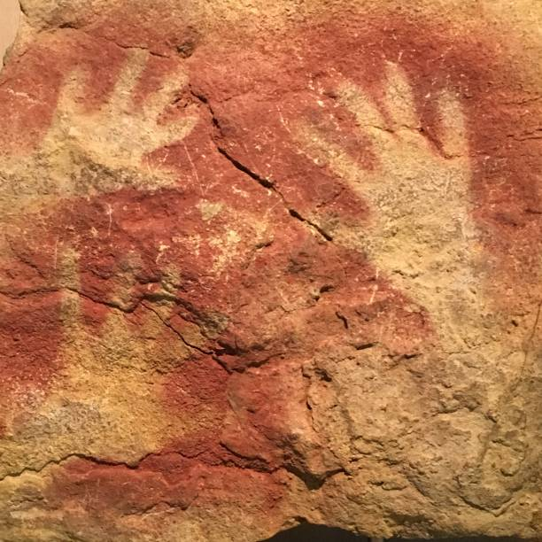
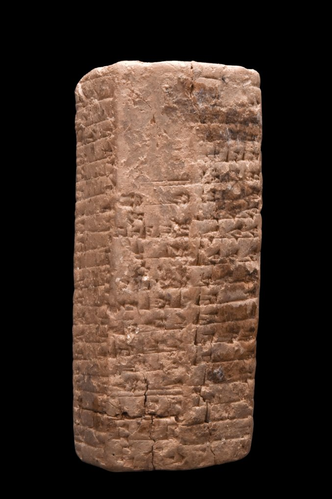
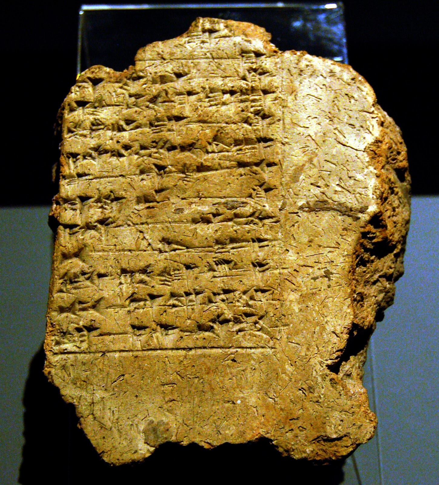
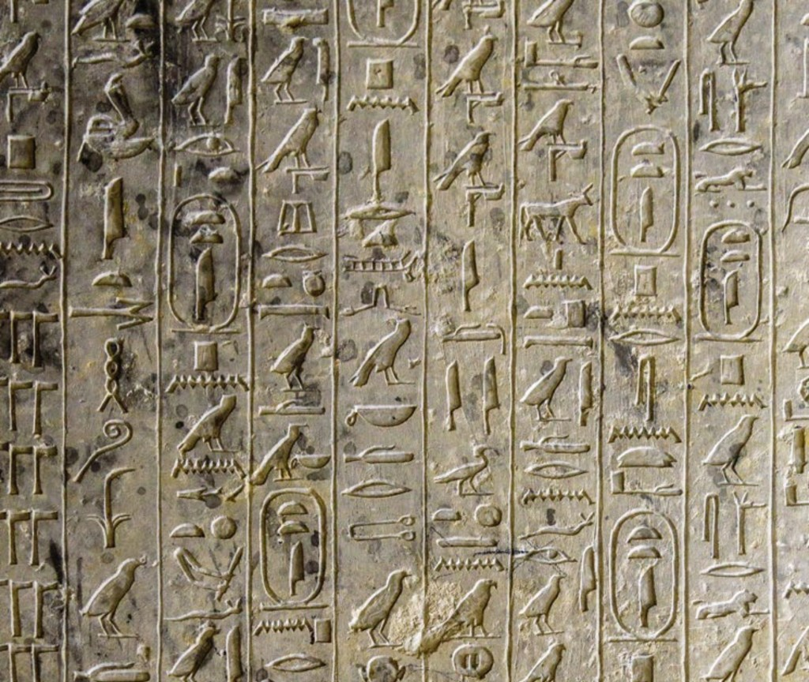
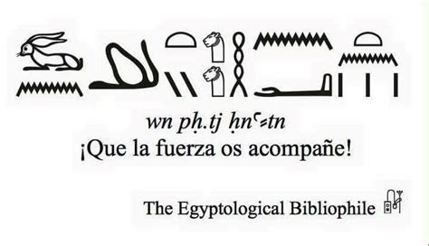
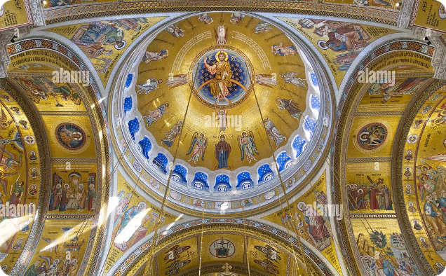
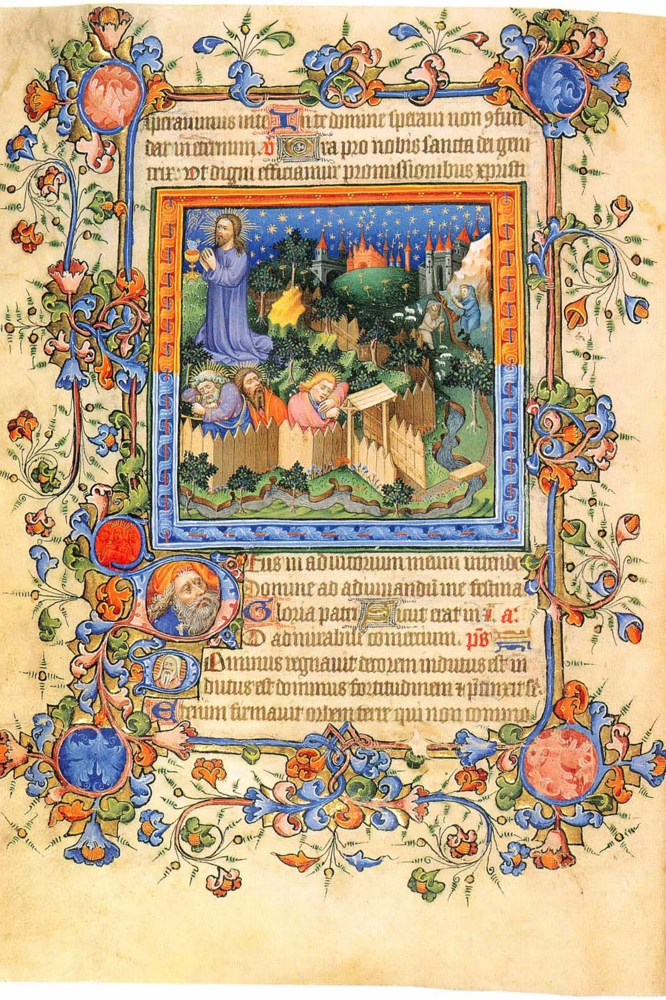
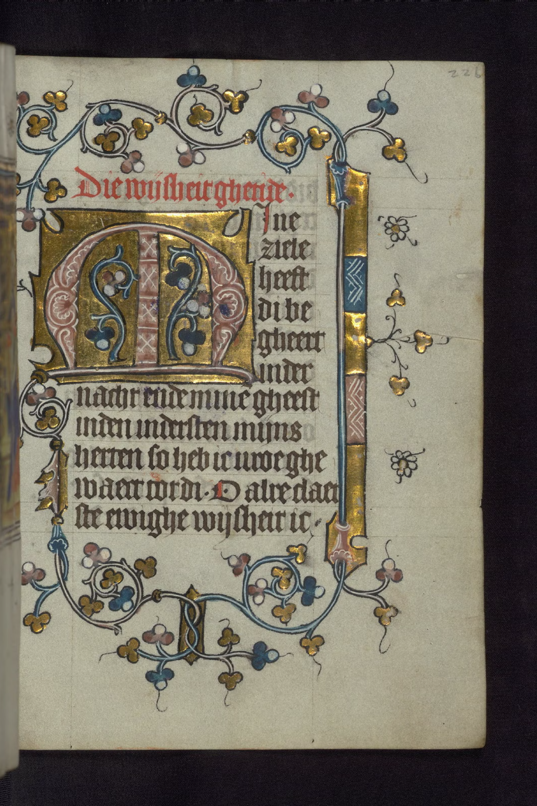

De la necesidad de representar al nacimiento de la comunicación visual
Antes de existir el diseño gráfico, ya existía algo mucho más antiguo: la necesidad humana de convertir ideas, experiencias e información en formas que pudieran ser vistas, comprendidas y recordadas.
El momento en que la imagen comenzó a comunicar
Antes del alfabeto existía la imagen. Antes de escribir una palabra, el ser humano ya había descubierto que una forma podía representar algo que no estaba presente.


Las pinturas rupestres constituyen algunas de las primeras evidencias conocidas de comunicación visual. En ellas aparecen animales, figuras humanas, manos y otros signos. Aunque no conocemos con absoluta certeza el significado de cada representación, sí podemos observar una transformación decisiva: la experiencia puede convertirse en una forma visible.
Un animal ya no necesita estar presente para ser representado. Una experiencia puede dejar una huella. Una idea puede convertirse en imagen.
Cuando la imagen se convirtió en registro
Las sociedades crecieron y apareció un problema nuevo: la memoria humana ya no era suficiente.


Había que registrar productos, intercambios, cantidades, propiedades y actividades administrativas. En Mesopotamia surgieron sistemas de escritura que permitieron transformar información en signos organizados.
Las tablillas de arcilla hicieron posible conservar información que antes dependía de la memoria. La escritura se convirtió en una especie de memoria visual de la sociedad.
Cuando imagen, escritura y espacio trabajaron juntos
En Egipto, la escritura y la imagen comenzaron a construir sistemas visuales complejos.


Los jeroglíficos podían representar sonidos, palabras e ideas, mientras las figuras y escenas participaban en la construcción del significado. El tamaño, la posición y la relación entre elementos contribuían a establecer importancia.
La imagen no solamente representa información: también la organiza. Una figura mayor puede adquirir mayor importancia; una posición puede orientar la lectura; la repetición puede reforzar una idea.
La importancia de las relaciones
Una composición no funciona solamente porque cada elemento sea interesante. Funciona porque los elementos mantienen relaciones entre sí.
En el mundo griego adquirieron especial importancia la proporción, la estructura, el equilibrio y la relación entre las partes. Una figura, una arquitectura o una composición podían funcionar porque existía una relación coherente entre sus componentes.
Cuando la comunicación salió al espacio público
Roma llevó la comunicación visual a un escenario cotidiano: la ciudad.
Inscripciones, avisos, mensajes públicos y formas de comunicación comercial y política ocuparon muros y distintos soportes. La comunicación visual comenzó a formar parte de la experiencia urbana.
El espacio público se convirtió también en espacio de información. Esto planteó un problema que sigue vigente: cómo hacer que un mensaje sea visible dentro de un entorno lleno de estímulos.
Otras formas de construir imágenes y sistemas
La historia del diseño no sigue una sola línea. Diferentes culturas desarrollaron soluciones propias para problemas visuales similares.
En India encontramos tradiciones donde el símbolo, la narración y la relación entre múltiples elementos tienen un papel importante. En China, escritura, caligrafía, imagen y espacio formaron relaciones complejas y la impresión permitió multiplicar textos e imágenes.
En Corea también se desarrollaron soluciones relacionadas con la estructura y la organización. Japón desarrolló procedimientos de reproducción mediante bloques que permitieron construir imágenes por capas y registrar diferentes colores con precisión.
Cuando la imagen se convirtió en símbolo
La expansión del cristianismo introdujo una nueva necesidad: representar conceptos religiosos mediante imágenes reconocibles.

En las primeras representaciones cristianas, la prioridad no siempre fue demostrar habilidad técnica. Muchas imágenes buscaban comunicar un significado que pudiera ser reconocido por la comunidad.
La representación comienza así a concentrarse en los elementos necesarios para comprender una idea. Una imagen puede ser sencilla y, al mismo tiempo, conceptualmente poderosa.
La imagen como tradición
Una imagen también puede funcionar porque forma parte de un sistema que la comunidad reconoce.
En el arte bizantino, las imágenes religiosas mantuvieron una fuerte relación con modelos y convenciones tradicionales. El icono pertenecía a un sistema de formas reconocibles.
Con el tiempo, los iconos adquirieron una función central dentro de la tradición cristiana oriental y las iglesias se llenaron de ciclos visuales capaces de dominar la experiencia del espacio.
Cuando la imagen aprendió a contar
Durante la Edad Media, la imagen comenzó a participar de manera cada vez más clara en la construcción de relatos.
Los monasterios tuvieron un papel importante en la conservación y producción de conocimiento. Allí se copiaron libros y se desarrollaron manuscritos cuidadosamente organizados.
La imagen dejó de comunicar únicamente una idea aislada y comenzó a formar parte de secuencias. Una escena podía mostrar un acontecimiento y otra continuar la historia.
Cuando una página se convirtió en un sistema visual
Imaginemos un libro medieval: cada página debe ser escrita, ilustrada y organizada manualmente. Nada puede copiarse con un comando.


Los manuscritos iluminados integraban escritura, ilustración, ornamentación y composición dentro de un mismo objeto. Su producción podía involucrar diferentes especialistas y espacios como el scriptorium.
Esto obligaba a tomar decisiones: dónde comienza el texto, cuánto espacio ocupa, dónde colocar una imagen, qué tamaño debe tener una letra inicial y cómo distribuir los elementos.
Dos lenguajes que pueden trabajar juntos
El texto puede explicar. La imagen puede mostrar. Juntos pueden construir algo más complejo.
En los manuscritos medievales la imagen podía complementar, ampliar o facilitar la comprensión del texto. El lector podía recorrer una historia mediante palabras y representaciones visuales.
Una imagen puede comunicar; una secuencia puede contar
La narrativa visual depende del orden, la continuidad y el recorrido del espectador.
El Tapiz de Bayeux es un ejemplo destacado de cómo diferentes escenas e inscripciones presentan una historia de manera continua. El relato se construye mediante una sucesión de acontecimientos que el observador debe recorrer visualmente.
Nada aparece completamente de la nada
Las nuevas soluciones suelen dialogar con las anteriores.
La historia del arte y del diseño no funciona como una sucesión simple en la que una época desaparece y otra comienza desde cero. Las nuevas formas toman, transforman, cuestionan o reorganizan conocimientos previos.
Cuando una imagen pudo empezar a multiplicarse
La impresión cambiaría la circulación del conocimiento y abriría una nueva etapa.
La posibilidad de reproducir textos e imágenes transformó la circulación del conocimiento. Una misma información podía aparecer muchas veces, llegar a públicos más amplios y viajar entre lugares distintos.
Meggs organiza la evolución del diseño desde la escritura y los manuscritos iluminados hacia la llegada de la impresión a Europa, el diseño del libro y posteriormente la tipografía y los procesos industriales.
Una historia de problemas y soluciones
La historia puede leerse como una secuencia de preguntas que todavía forman parte del trabajo de cualquier diseñador.
Representar
Registrar
Organizar
Relacionar
Comunicar
Simbolizar
Sintetizar
Reconocer
Narrar
Planear
Reproducir
La historia todavía habla del presente
Estudiar historia del diseño significa comprender de dónde vienen muchas de las decisiones que tomamos hoy.
Representar, registrar, organizar, jerarquizar, simbolizar, narrar, relacionar texto e imagen y reproducir siguen siendo problemas actuales.
Las herramientas cambian. Los soportes cambian. Las tecnologías cambian. Pero la pregunta fundamental permanece:
¿Cómo transformar una idea en una forma visual capaz de comunicarla?
Lectura elaborada a partir de los materiales y bibliografía de la asignatura.